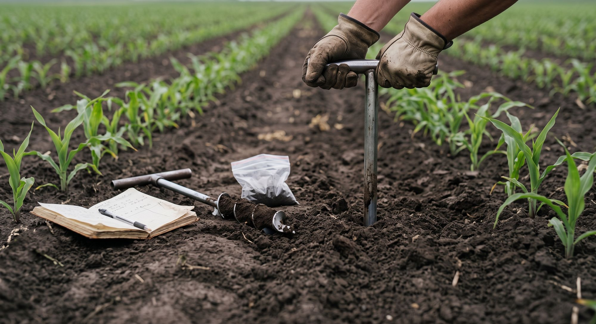

Odczyn
Wniosek technologicznyOptymalny zakres w metodyce integrowanej to około pH 6,0–7,2 w wodzie.
Przy pH poniżej 5,5 bezwzględnie potrzebne wapnowanie, nie biostymulator.
Najdokładniejszy program nie zaczyna się od wyboru odmiany, czy preparatu herbicydowego, lecz od określenia ograniczeń plonowania. W kukurydzy najczęściej są nim: zbyt niski odczyn i zagęszczenia gleby, niedobór wody, niewłaściwe nawożenie azotowe i potasowe, słaba dostępność fosforu w chłodnej glebie, niedobór cynku i boru, a także możliwe nadmiary.
1
Warianty Carbohort – wybierz jeden zabieg bazowyA. PłynnyB. SypkiC. Strategiczny
0,6l/ha
od fazy 4 liści BBCH 14 do początku wysuwania wiechy BBCH 51
20–40l/ha
na resztki · w ok. 400 l wody
Pięć produktów, każdy w innej roli. Kliknij kartę, żeby zobaczyć mapę zastosowań i konsekwencje dla kukurydzy.
 CARBOMAT ECO
CARBOMAT ECO
 CARBOMAT HUMIC
CARBOMAT HUMIC
 CARBOHUMIC filtrowany 187 mesh
CARBOHUMIC filtrowany 187 mesh
 CARBOHUMIC niefiltrowany 20 mesh
CARBOHUMIC niefiltrowany 20 mesh
 CARBOHUMIC MAXI PLUS
Otwiera mapę zastosowań
Jeśli celem jest zabieg sypki razem z uprawą pasową lub nawozem
Rozważ CARBOMAT HUMIC.
Otwiera mapę zastosowań
Jeśli gleba jest silnie zdegradowana, bardzo lekka bądź bardzo ilasta albo ma chronicznie niską zawartość materii organicznej
Zaplanuj CARBOMAT ECO jako inwestycję wieloletnią, po kalkulacji dawki i kosztu.
Otwiera mapę zastosowań
Jeśli dostępny jest beczkowóz lub instalacja bez ryzyka zatkania
Można wybrać CARBOHUMIC niefiltrowany 20 mesh.
Otwiera mapę zastosowań
CARBOHUMIC MAXI PLUS
Otwiera mapę zastosowań
Jeśli celem jest zabieg sypki razem z uprawą pasową lub nawozem
Rozważ CARBOMAT HUMIC.
Otwiera mapę zastosowań
Jeśli gleba jest silnie zdegradowana, bardzo lekka bądź bardzo ilasta albo ma chronicznie niską zawartość materii organicznej
Zaplanuj CARBOMAT ECO jako inwestycję wieloletnią, po kalkulacji dawki i kosztu.
Otwiera mapę zastosowań
Jeśli dostępny jest beczkowóz lub instalacja bez ryzyka zatkania
Można wybrać CARBOHUMIC niefiltrowany 20 mesh.
Otwiera mapę zastosowań
Nie kumuluj wszystkich form produktów w jednym miejscu i sezonie. Lepiej założyć pasy porównawcze i ocenić efekt w glebie, korzeniach i plonie owoców i ziarna.
Przy deklarowanej zawartości około 6% K₂O produkt wnosi orientacyjnie:
Po zbiorze przedplonu i jesienne przygotowanie pola
Analiza gleby, rozdrobnienie resztek, regulacja pH i stosunku kationów według potrzeb. Uprawa poplonu do likwidacji zimą lub wczesną wiosną. Tu może być nawożenie P, K Mg, S i mikroelementów Zn, Mn, B przed lub po poplonach
CARBOHUMIC filtrowany 187 mesh lub CARBOHUMIC niefiltrowany 20 mesh pod uprawę poplonu jesiennego; CARBOMAT ECO tylko jako zabieg strategiczny przed siewem poplonu
Pełny opis fazyWczesna wiosna i przygotowanie przedsiewne
Ewentualna korekta struktury gleby – głębosz, nawożenie N wg bilansu azotu po zimie (inne najlepiej jesienią) z uwzględnieniem systemu optymalizacji wykorzystania N (inhibitory)
CARBOMAT HUMIC do 150 kg do podsiewacza albo CARBOHUMIC filtrowany 187 mesh – aplikacja poniżej głębokości siewu lub współrzędowa w systemie aplikacji nawozów płynnych.
Pełny opis fazyWschody i 1–3 liście – BBCH 10–13
Nie przeszkadzać wschodom kukurydzy, szybko reagować na zaskorupienie, chłód, fitotoksyczność lub niedobory.
Pełny opis fazy4–8 liści – BBCH 14–18: najważniejszy termin
Ewentualna druga dawka N, ewentualnie cynk, obserwacja stresu
CARBOHUMIC MAXI PLUS jako zabieg interwencyjny lub zapobiegawczy
Pełny opis fazyIntensywny wzrost – BBCH 19–39
Woda, azot, magnez, siarka bor i mangan według potrzeb tylko dolistnie w oprysku
CARBOHUMIC MAXI PLUS tylko przy uzasadnieniu
Pełny opis fazyWiechowanie, pylenie i znamionowanie – BBCH 51–69
Ochrona zapylenia przez wodę i zdrowotność roślin
Pełny opis fazyZawiązywanie i nalewanie ziarna – BBCH 71–87
Ochrona liścia, nalewanie ziarna, brak rutynowych koktajli Zabiegi na omacnicę prosowiankę
Pełny opis fazyDojrzewanie i zbiór – BBCH 89
Termin zbioru dobierz odpowiednio do wilgotności ziarna, pogody, kosztu suszenia i ryzyka wylegania lub pojawu chorób fuzaryjnych.
Pełny opis fazyResztki pożniwne kukurydzy
Równomierne rozdrobnienie, wilgoć, płytkie wymieszanie/mulczowanie lub pozostawienie na powierzchni gleby
CARBOHUMIC filtrowany 187 mesh, opcjonalnie mikroorganizmy
Można dać CARBOHUMIC BIOMAS
Pełny opis fazyZanim wybierzesz produkt: co zbadać i które fakty o kukurydzy decydują o programie.

Zapytaj doradcę CarboHortOptymalny zakres w metodyce integrowanej to około pH 6,0–7,2 w wodzie.
Przy pH poniżej 5,5 bezwzględnie potrzebne wapnowanie, nie biostymulator.
Roślina intensywnie programuje potencjał plonowania.
Do fazy 6–7 liści powinna być dostępna pozostała część azotu, przed tworzeniem się zalążka kolby.
Łatwodostępny jest kluczowy od kiełkowania do fazy 6–8 liści, szczególnie w glebie o temperaturze poniżej 12 °C.
Nawóz startowy może przyspieszać rozwój, ale nie zawsze podnosi plon.
Najbardziej intensywne pobieranie przypada mniej więcej od 5–6 liści do kwitnienia.
Bilans musi uwzględniać zasobność i przeznaczenie plonu. Przesadna zasobność/nawożenie potasem może obniżać plon.
To najważniejszy mikroelement do rozważenia w kukurydzy, ale dawka powinna wynikać z analizy gleby lub liści i ryzyka stanowiska.
Oba pierwiastki wspierają się w działaniu i warunkują prawidłowy rozwój i plonowanie.
Odpowiedź kukurydzy na bor zależy od dostępności wapnia, a nadmiar może być toksyczny, lecz mało prawdopodobny w glebach Polski. Wapń zwykle uzupełnia się przez regulację odczynu, lecz jego zawartość nie powinna być mniejsza niż 1000mg/kg gleby, przy zasobności w magnez na poziomie co najmniej 70 mg/kg gleby.
Produkty humusowe poprawiają warunki wykorzystania wody i składników, ale nie zastępują bilansu N, P, K, Mg, Ca, S, mikroelementów, prawidłowego pH ani prawidłowej uprawy roli.
Warianty nie oznaczają trzech poziomów jakości. Każdy może być poprawny, jeśli odpowiada ograniczeniom pola i budżetowi.
Pole w dobrej kulturze
Termin · ProgramGleba lekka lub okresowo przesychająca
Obszar · ProgramStanowisko zdegradowane lub wieloletnia monokultura
Element · ProgramWapnowanie, dobór formy wapna, analiza Mg
CARBOMAT HUMIC może wspierać buforowanie, ale nie zastępuje wapna
Fosfor i Zn mogą być słabo dostępne; nie zwiększaj dawek w ciemno.
Ocena ryzyka niedoboru Zn i P
Ostrożnie z zasadowym CARBOMAT HUMIC;
Cynk – zabieg celowany, nawóz startowy P.
Retencja wody i składników, mniejsze i dzielone dawki N, stosowanie okrywy gleby roślinami
CARBOMAT ECO strategicznie; CARBOMAT HUMIC lub CARBOHUMIC filtrowany 187 mesh jako zabieg sezonowy
Potas, Mg, S według analizy.
Poprawa struktury gleby, drenaż, unikanie przejazdów na mokro
CARBOMAT ECO o grubszej frakcji może być elementem programu wieloletniego
Resztki pozbiorowe mieszane płytko w glebie.
Zmianowanie, mulczowanie grubych łodyg, lustracja omacnicy i stonki
CARBOHUMIC filtrowany 187 mesh po zbiorze jako wsparcie humifikacji
Rozważ biologiczną ochronę zgodną z rejestracją.
Bilans N, P, K i zasolenia
Dawka substancji humusowych może poprawić retencję, ale nie jest automatycznie potrzebna
Zmniejsz nawozy mineralne o składniki wniesione z nawozami naturalnymi.
Ochrona wilgoci, głębokość siewu, ograniczenie zasolenia gleby
produkty CARBOHUMIC i CARBOMAT jako wsparcie retencji, nie zamiennik wody
Nie wykonuj agresywnych mieszanin dolistnych.
Fosfor dla siewek, ocena dostępności Zn, unikanie zagęszczenia
CARBOHUMIC MAXI PLUS dopiero po wznowieniu aktywnego wzrostu
Nie opryskuj roślin bezpośrednio przed spadkiem temperatury.
Zawsze wykonaj test słoikowy w wodzie używanej do zabiegu. Oceniaj osad, kłaczki, pianę, wzrost temperatury i rozwarstwienie.
Sprawdź pH i twardość wody. Produkty humusowe mogą reagować z silnie kwaśnymi, silnie zasadowymi lub wysoko zasolonymi komponentami.
Nie łącz żywych mikroorganizmów z wodą utlenioną, kwasem podchlorawym, srebrem, chlorem i silnymi dezynfektantami.
Nie zakładaj, że zgodność fizyczna zawsze oznacza bezpieczeństwo dla rośliny. Przy wątpliwościach wykonaj próbę na małym fragmencie.
Każdy środek ochrony roślin stosuj zgodnie z jego etykietą.
| Produkt | Możliwe połączenia | Unikać | Praktyczna uwaga |
|---|---|---|---|
|
CARBOMAT ECO
|
Nawozy organiczne/mineralne w aplikacji glebowej |
Nie dotyczy |
Wymieszać z glebą; kontrolować pH wariantu. |
|
CARBOMAT HUMIC
|
Granulowane NPK, materia organiczna; nie łączyć z wapnowaniem |
Opryskiwacz, fertygacja, linie kroplujące |
Nierozpuszczalne huminy mogą zapychać filtry, dysze i kroplowniki. |
|
CARBOHUMIC filtrowany 187 mesh
|
Nawozy płynne i biologiczne po teście; aplikacja doglebowa |
Silne utleniacze/dezynfektanty |
Drobna frakcja, ale nadal wymaga płukania instalacji dozujących |
|
CARBOHUMIC niefiltrowany 20 mesh
|
Aplikacja polewowa i układy o dużym przepływie |
Standardowe dysze i filtry bez potwierdzonej przepustowości |
Ryzyko zapchania. |
|
CARBOHUMIC MAXI PLUS
|
Nawozy dolistne i część ŚOR po teście* i zgodnie z etykietą |
Mieszaniny wieloskładnikowe na roślinie po silnym stresie |
Zaczynać od prostego składu. |
* ze względu na bardzo złożone i różnorodne formulacje zgodność ŚOR z produktami humusowymi musi być sprawdzona nie tylko w teście słoikowym, ale także polowo. Dotyczy to konkretnego produktu-formulacji, a nie jedynie substancji czynnej. Dezaktywacja ŚOR przez kwasy humusowe jest także funkcją czasu i stężenia w cieczy roboczej, dlatego nawet przy pomyślnych testach mieszalności należy stosować duże ilości wody i niezwłocznie wykonywać zabieg oprysku.
Skuteczność preparatów humusowych może być inna na glebie lekkiej, czarnoziemie i stanowisku po wieloletniej monokulturze. Dlatego program powinien mieć stały element kontrolny.
Przelicznik mnoży dawki z programu przez powierzchnię. Nie liczy CARBOMAT ECO, bo program każe wyliczyć dawkę indywidualnie, ani CARBOMAT HUMIC, bo dawka zależy od sposobu aplikacji (od 100 kg/ha w strip-tillu do 500 kg/ha całopowierzchniowo).
CARBOHUMIC MAXI PLUS: 0,6 l/ha w jednym zabiegu; program dopuszcza powtórkę po 7–10 dniach tylko przy utrzymującym się uzasadnieniu.
Koszt programu na hektar – do uzupełnienia po ustaleniu cen.
Źródło treści: Program uprawy kukurydzy, CarboHort, program technologiczny, sierpień 2026.
Trwały, rozdrobniony lignit o regulowanej kwasowości do poprawy struktury gleby i retencji wody oraz składników odżywczych; nie jest typowym corocznym nawozem startowym.
W kukurydzy traktować jako inwestycję stanowiskową na gleby lekkie, zdegradowane, nadmiernie ciężkie, ilaste lub ubogie w materię organiczną. Dawkę wyliczyć indywidualnie.
Produkt częściowo rozpuszczalny, zasadowy, zawiera ok. 6% K₂O i aktywowane substancje humusowe. Frakcja nierozpuszczalna tworzy odpowiednik próchnicy w glebie.
Do stosowania przed siewem, pasowo lub strip-till pod nasiona. Nie stosować do oprysku ani fertygacji. Nie jest zamiennikiem nawozów potasowych.
Wersja filtrowana do stosowania jako opryski i fertygację w wielu scenariuszach użytkowania.
Może być podstawowym zabiegiem oprysku/aplikacji doglebowej przed siewem lub oprysku po zbiorze.
Wersja niefiltrowana do aplikacji polewowej, beczkowozem lub rozlewakami.
Nie stosować przez standardowe dysze opryskiwaczy i linie kroplujące.
Aktualne publiczne dawki są niższe niż 2–5 l/ha wpisane w starym dokumencie dla kukurydzy. Dawki nie powinny przekraczać 0,6 l/ha w jednym zabiegu
Zabieg 0,6 l/ha od fazy 4 liści BBCH 14 do początku wysuwania wiechy BBCH 51 – (później wątpliwe zainteresowanie z powodu wysokości roślin i potrzeby odpowiednich opryskiwaczy, zwłaszcza przy odmianach kiszonkowych)
Analiza gleby, rozdrobnienie resztek, regulacja pH i stosunku kationów według potrzeb. Uprawa poplonu do likwidacji zimą lub wczesną wiosną. Tu może być nawożenie P, K Mg, S i mikroelementów Zn, Mn, B przed lub po poplonach
Usunięcie ograniczeń strukturalnych gleby, wyregulowanie odczynu, aktywizacja biologiczna i zbudowanie rezerwy wody przed wiosną.
Wariant na gleby lekkie, zdegradowane, nadmiernie ciężkie, ilaste lub ubogie w materię organiczną. Można stosować całopowierzchniowo lub pasowo w uprawach rzędowych trwałych. Dokładnie wymieszać z warstwą uprawną.
Ok. 50 l/ha doglebowo sprzętem do aplikacji rozlewowej lub rozbryzgowej.
10–40 l/ha w ok. 400 l wody po zbiorze lub przed uprawą, zgodnie z zaleceniami.
Badania polowe nie potwierdzają przyspieszonego rozkładu pociętej słomy kukurydzianej po aplikacji jesiennych dawek azotu. Ważniejsze są: rozdrobnienie, kontakt z glebą, temperatura i wilgotność.
Ewentualna korekta struktury gleby – głębosz, nawożenie N wg bilansu azotu po zimie (inne najlepiej jesienią) z uwzględnieniem systemu optymalizacji wykorzystania N (inhibitory)
Stworzyć ogrzaną, równą i wilgotną strefę siewną oraz umieścić składniki odżywcze w pobliżu korzeni siewki.
Właściwy termin, obsada, bezpieczny nawóz startowy.
Szybkie, równe wschody bez uszkodzenia siewek przez zasolenie, chłód lub zbyt głęboki siew.
Nie przeszkadzać wschodom kukurydzy, szybko reagować na zaskorupienie, chłód, fitotoksyczność lub niedobory.
Nie przeszkadzać wschodom kukurydzy, szybko reagować na zaskorupienie, chłód, fitotoksyczność lub niedobory.
Ewentualna druga dawka N, ewentualnie cynk, obserwacja stresu
Zabezpieczyć azot, fosfor, potas, cynk i rozwój korzenia w fazie, w której roślina ustala liczbę rzędów i potencjał kolby. Nie łącz wielu mikroelementów bez zbadania ich zgodności. Każdy kolejny składnik podnosi ryzyko uszkodzeń i antagonizmów.
0,6 l/ha + mikroelementy jako element regeneracji po stresie lub zapobiegawczo. Możliwa powtórka po 7–10 dniach tylko przy utrzymującym się uzasadnieniu.
W zdrowym łanie: cynk tylko po potwierdzeniu potrzeby + ewentualnie Mg/S. W łanie po stresie: najpierw oceń zdolność regeneracji, następnie zastosuj prostą mieszaninę z CARBOHUMIC MAXI PLUS. Unikaj jednoczesnego łączenia herbicydu, wielu soli nawozowych i biostymulatora na roślinie po chłodzie.
Woda, azot, magnez, siarka bor i mangan według potrzeb tylko dolistnie w oprysku
Ochrona zapylenia przez wodę i zdrowotność roślin
Utrzymać wodę, sprawny aparat liściowy i zdrowe, dobrze wypełnione kolby. Jest to jeden z najbardziej wrażliwych okresów na suszę i wysoką temperaturę.
Ochrona liścia, nalewanie ziarna, brak rutynowych koktajli Zabiegi na omacnicę prosowiankę
Termin zbioru dobierz odpowiednio do wilgotności ziarna, pogody, kosztu suszenia i ryzyka wylegania lub pojawu chorób fuzaryjnych.
Równomierne rozdrobnienie, wilgoć, płytkie wymieszanie/mulczowanie lub pozostawienie na powierzchni gleby
Ograniczyć straty wody, wschody chwastów, siedlisko dla patogenów i szkodników, przyspieszyć kontakt resztek z glebą i stymulować procesy humifikacyjne.
Rozdrabniacz lub mulczer powinien przeciąć łodygi, szczególnie nasady, i równomiernie rozrzucić biomasę. Optymalne rozdrobnienie to fragmenty słomy do 8 cm długości.
Zabieg produktami biologicznymi lub humusowymi wykonuj, gdy resztki i gleba są wilgotne. Na skrajnie suchej słomie efekt będzie ograniczony.
CARBOHUMIC filtrowany 187 mesh w zakresie 20–40 l/ha w ok. 400 l wody. CARBOHUMIC BIOMAS w dawce 100 l z 300 l wody na ha.
Opcjonalnie preparat do resztek, np. konsorcjum bakterii/grzybów o potwierdzonej rejestracji.
Nie stosuj azotu na pociętą słomę. Badania nie potwierdzają korzyści ze stosowania azotu na słomę przed zimą.
Płytkie i równomierne wymieszanie z glebą. Głębokość dopasuj do wilgotności i systemu uprawy; unikaj zakopania grubej warstwy w warunkach beztlenowych. Mulczowanie z glebą może być wykonane nawet dopiero na przedwiośniu, zależnie od terminów uprawy pod roślinę następczą.
Sprawdź stopień rozkładu resztek, obecność larw i źródeł infekcji przed siewem kolejnej rośliny.